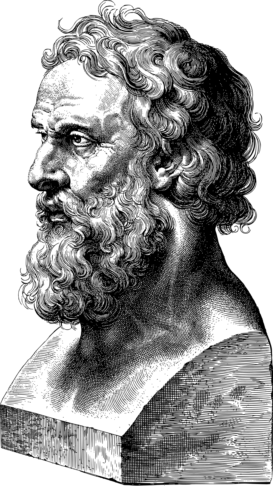

What is Philosophy?
Philosophy delves into the profound complexities of human existence, posing inquiries about the nature of morality, the origins of consciousness, and the limits of human understanding. It encompasses various branches, from ethics that examines principles of right and wrong to metaphysics exploring the nature of reality itself. Epistemology scrutinizes the nature of knowledge and how we come to understand the world, while aesthetics contemplates the nature of beauty and artistic expression. Philosophy's timeless quest involves critical thinking, logical analysis, and contemplation of the profound, challenging individuals to question assumptions and cultivate a deeper understanding of the world. As an intellectual discipline, philosophy not only provides conceptual frameworks but also fosters intellectual curiosity, encouraging individuals to engage in thoughtful reflection and contribute to the ongoing dialogue that shapes our collective understanding of existence.
"There is nothing permanent except change." ~Heraclitus
Importance of Philosophy

Philosophy holds paramount importance in shaping our intellectual landscape and guiding various aspects of human life. It serves as the foundational underpinning for critical thinking, fostering an analytical mindset essential for solving complex problems. Ethical philosophy provides a moral compass, influencing individual and societal decisions. Metaphysics explores the nature of reality, contributing to scientific inquiry and our understanding of existence. Epistemology lays the groundwork for the pursuit of knowledge and the scientific method.
Critical Thinking: Philosophy cultivates analytical skills, teaching individuals to question assumptions and evaluate arguments, fostering a habit of critical thinking applicable across various disciplines.
Ethical Guidance: Philosophical inquiries into morality and ethics provide a foundation for making principled decisions, shaping personal conduct, and influencing societal values.
Intellectual Diversity: Philosophy encourages open dialogue, embracing diverse perspectives and promoting a culture of intellectual diversity essential for a vibrant and dynamic society.
Foundational for Sciences: Metaphysical and epistemological inquiries contribute to the scientific method, shaping the way we understand and explore the natural world.
Personal Reflection: Philosophy offers a space for individuals to explore their beliefs, values, and purpose, fostering personal development and a deeper understanding of one's own worldview.
Stoicism

Stoicism, a profound philosophical system that emerged in ancient Greece, remains a timeless guide for navigating the complexities of human existence. Rooted in the teachings of Zeno of Citium around 300 BCE, Stoicism proposes a way of life centered on personal virtue and rationality. At its core is the Stoic belief in the dichotomy of control, asserting that individuals have power over their own thoughts, attitudes, and actions, while external events lie beyond their control. This philosophy encourages a resilient mindset, teaching practitioners to cultivate an inner fortress impervious to the tumultuous fluctuations of external circumstances.
Central to Stoic thought is the notion of living in harmony with nature, aligning one's actions with reason and the natural order of the cosmos. Virtue, according to Stoicism, is the ultimate good, and the pursuit of wisdom, courage, justice, and temperance becomes the foundation for a flourishing life. Stoics advocate for an ethical framework that transcends societal norms, emphasizing the importance of character over fleeting pleasures or material possessions.

Prominent Stoic figures such as Seneca, Epictetus, and the Roman Emperor Marcus Aurelius further developed and popularized these teachings. Seneca, in his letters and essays, explored the practical applications of Stoic principles in daily life, advocating for a life of virtue and mindful acceptance. Epictetus, a former slave turned philosopher, emphasized the power of personal agency and the significance of distinguishing between what is within and beyond one's control. Marcus Aurelius, in his "Meditations," provided personal reflections on Stoic virtues, revealing the challenges he faced as a leader and the strategies he employed to maintain inner tranquility amidst external pressures.
In the contemporary context, Stoicism has experienced a resurgence as individuals seek timeless wisdom to navigate the uncertainties of the modern world. Its emphasis on self-discipline, resilience, and ethical conduct resonates across diverse cultural and philosophical landscapes, offering a practical guide for leading a purposeful and virtuous life in the face of life's inevitable challenges.